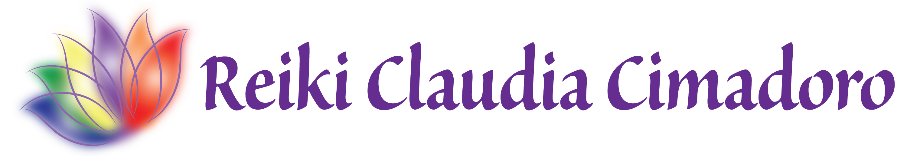

Hace 8 años comencé a transitar este camino de sanación que es el Reiki.Soy Directora de la Alianza Argentina de Reiki La Pampa y, además, de la Escuela de La Matanza en Buenos Aires. Mi membresía profesional pertenece a la Alianza Argentina de Maestros de Reiki, con matrícula nº 0075.
Mi interés por el Reiki comenzó después de recibir comentarios, leer información, ya que siempre me llamó la atención todo lo relacionado con las terapias de sanación, armonización energética, además de la medicina convencional. Era una manera de entender que necesitaba cambiar mi calidad de vida pero no tomaba la decisión de hacerlo, hasta que el tener que transitar la enfermedad de mi padre pensando de qué manera podría también ayudarlo a él fue decisivo para decidir acercarme al Reiki.
Comencé cursando los primeros niveles sólo con la intención de comenzar a cambiar mi vida, armonizarme, cambiar hábitos de vida y al mismo tiempo, ayudar a mi padre. Éstos eran los únicos motivos que yo tenía, nunca pensé en dedicarme de lleno a la práctica y enseñanza de Reiki.
Pero fue tal el cambio que se produjo en mí que sentí la necesidad de seguir especializándome cada vez más. Cada curso que realizaba y practicaba con mucha seriedad y respeto provocaba en mí y en los demás un cambio tan importante que aumentó más mi necesidad de transmitir todo lo que yo recibía.
Sentía que cada uno de nosotros tiene la posibilidad de disfrutar de estos cambios maravillosos y así fue como completé mi maestría y comencé a iniciar a otros practicantes de Reiki.
Jamás pensé que mi vida cambiaría tan positivamente, disfrutándola, teniéndo otra claridad, poder tener una vida plena, en armonía con todos, sintiendo mucha felicidad y emoción cada vez que transmito esta técnica, ya sea en sesiones o iniciando alumnos.
Tenemos una herramienta en nuestras manos tan poderosa y llena de amor para brindarle armonía, paz, sanación, equilibrio a todo el que lo recibe y también a nosotros mismos.
Agradezco a Dios, a mis guías, a mis maestros y a todas las personas que me acompañaron y acompañan día a día en este maravilloso camino.
Todas mis maestrías en distintas técnicas de Reiki las cursé en la Escuela Argentina de Reiki Mario Lombardi, y en la Escuela Argentina de Meditación y Yoga cursé el profesorado de Meditación.
Maestrias en: Reiki Usui, Reiki Karuna, Reiki Ángeles, Reiki Kármico, Reiki Egipcio, Holy Fire Usui, Holy Fire Karuna, Shinpiden Shihan, Jin Kei Do, Buddho, Magnified Healing, Reiki Animales, Reiki Cristales, Diksha Giver.
El linaje es el árbol genealogico en el aprendizaje de Reiki, y es de suma importancia que vos lo conozcas antes de iniciarte en un curso.
Es la línea de transmisión de la técnica que va pasando de Maestro a Maestro, desde Mikao Usui, otorgandole así todo el soporte, solidez y confianza a tu práctica de reiki.
En muy importante conocer el linaje de tu maestro para asi conocer también el tuyo.